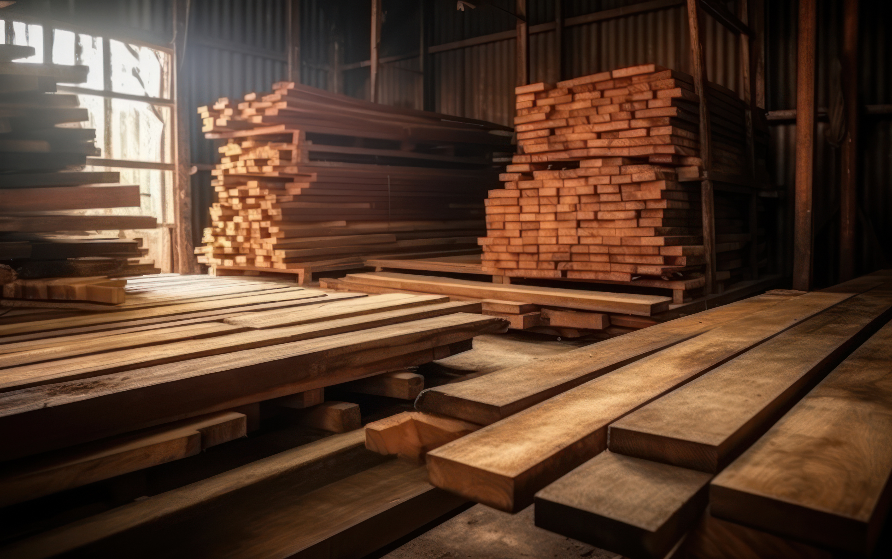

Erfarna snickare
i Karlsborg
Vi utför allt inom bygg och snickerier med största kvalitet. Med lång erfarenhet och med kunden i fokus hjälper vi dig med de projekt du behöver hjälp med — renovering, nybyggnation, takläggning, badrum, kök, altan m.m. Vi projektleder och samarbetar med erfarna elektriker, målare, rörmokare och plattsättare.
Kontakt
